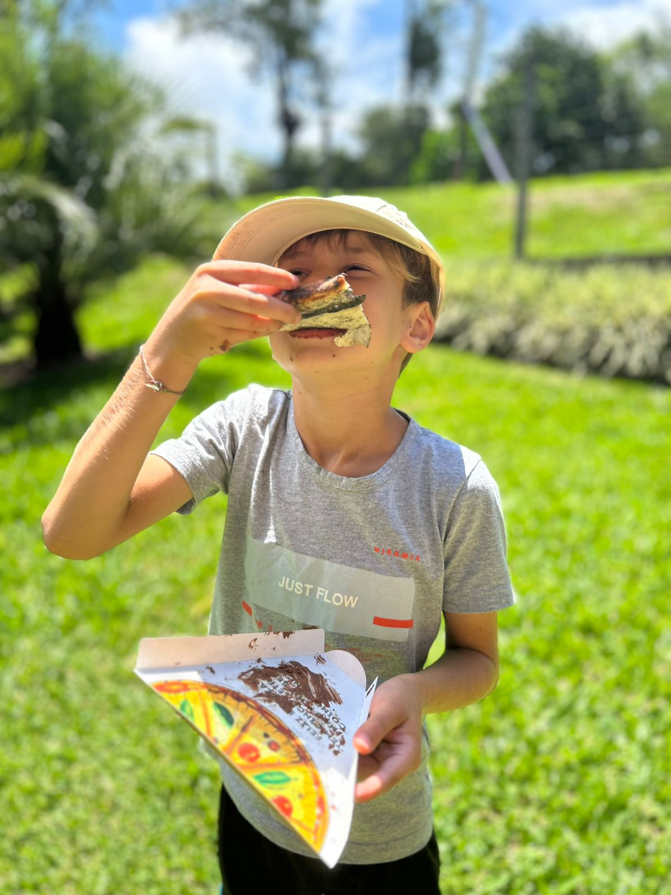

Pizzaiolo no local
Nossa equipe prepara cada pizza na hora, na sua frente.
Pizza em eventos
Na Táparo Artigianale, acreditamos que uma boa pizza vai muito além do sabor. Ela aproxima pessoas, cria momentos e transforma encontros em memórias.

O serviço
Por isso, levamos até o seu evento uma experiência completa de pizzaria artesanal. Nossa equipe monta toda a operação no local, com forno móvel, mesas de trabalho, utensílios e ingredientes cuidadosamente selecionados, para que você aproveite cada momento enquanto nós cuidamos de tudo.
Cada pizza nasce diante dos seus convidados. Da abertura manual da massa à finalização, todo o processo acontece na hora, revelando a técnica, o cuidado e a paixão que colocamos em cada detalhe. O aroma do forno, o movimento da equipe e o preparo ao vivo fazem parte da experiência, tornando o serviço tão especial quanto as pizzas servidas.
Nossas massas passam por um longo processo de fermentação, resultando em uma pizza leve, saborosa e de alta qualidade. Tudo é preparado para oferecer uma experiência autêntica, acolhedora e inesquecível.
Seja em casamentos, aniversários, eventos corporativos ou celebrações especiais, a Táparo Artigianale leva até você a essência da pizza artesanal italiana, proporcionando um serviço completo, elegante e memorável para você e seus convidados.
O que levamos
Nossa equipe prepara cada pizza na hora, na sua frente.
Levamos toda a estrutura: forno e utensílios.
Cardápio personalizado para o tamanho e estilo do seu evento.
Galeria
Conte a data, o local e o número de convidados para receber um orçamento.
Solicitar orçamento